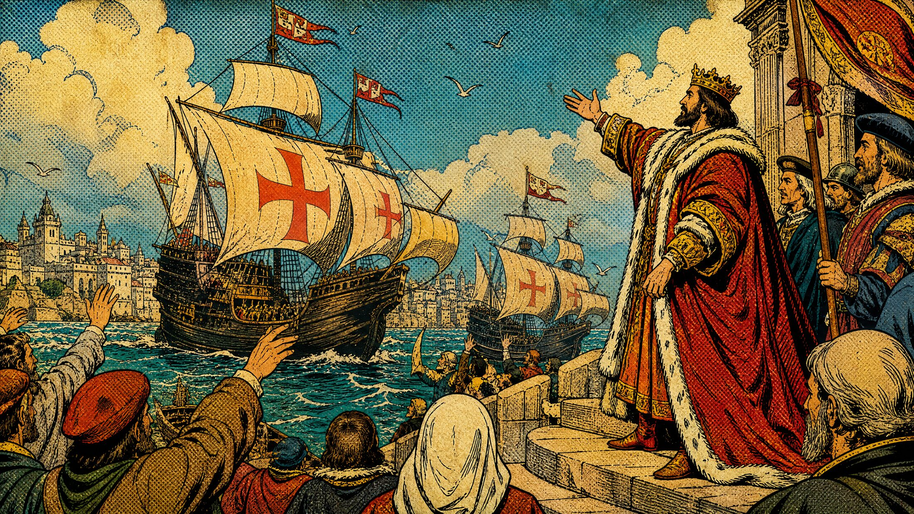
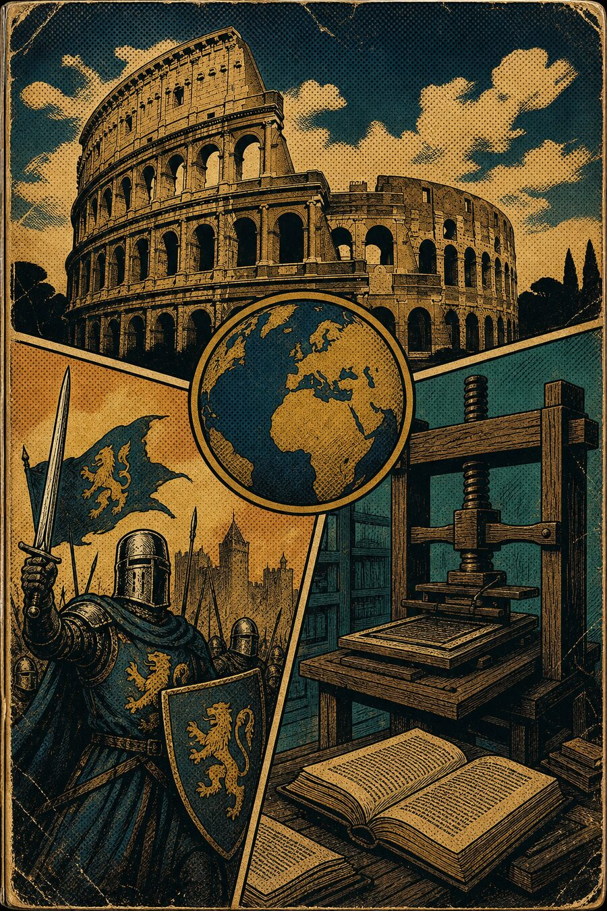
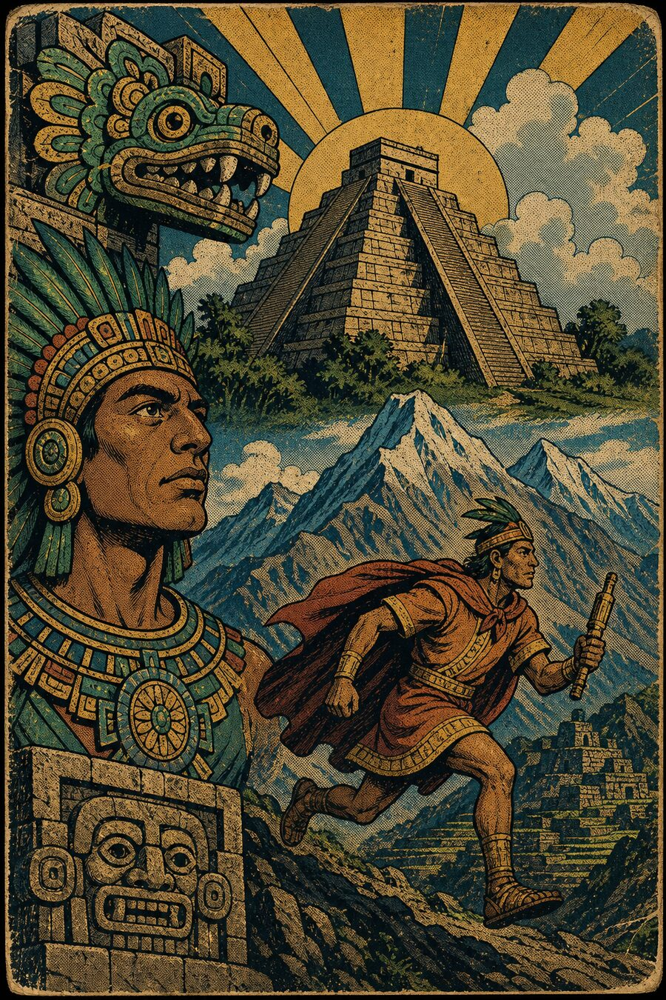
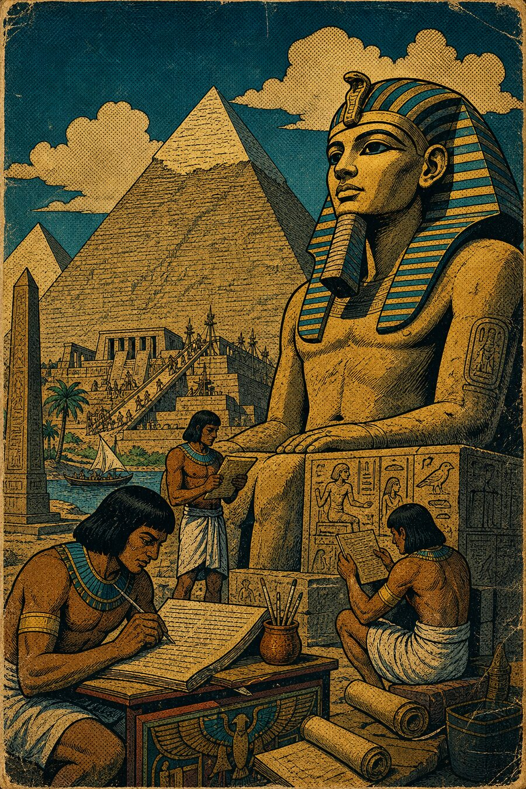
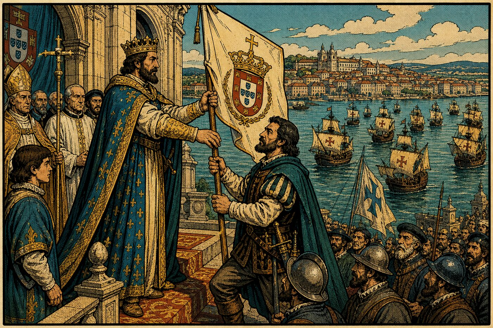
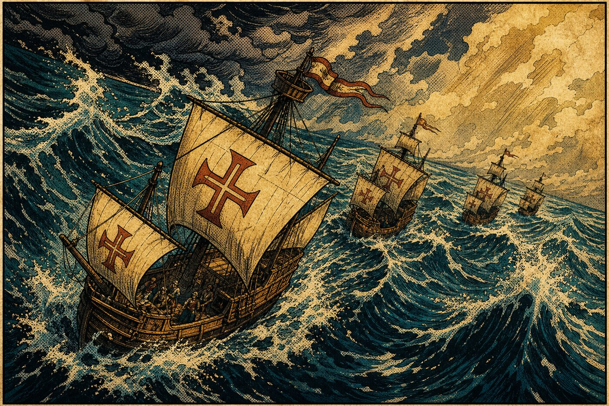

1. Leia a HQ
Cada capítulo abre com o contexto histórico em painéis de quadrinho — datas, personagens e motivações.

Uma pequena plataforma educacional que reúne histórias em quadrinhos e minigames para estudar História do Brasil. Leia o capítulo, jogue a cena e desbloqueie o próximo episódio.
do livro para a tela
Cada capítulo abre com o contexto histórico em painéis de quadrinho — datas, personagens e motivações.
Depois da leitura, o conteúdo vira jogo: decisões, obstáculos e a mesma rota que a esquadra enfrentou.
Concluir a HQ ou o minigame libera o capítulo seguinte. Seu progresso fica salvo no navegador.
escolha uma trilha
Clique em uma história para ver os capítulos.

História Geral
Antiguidade, Idade Média e Moderna
Roma, feudalismo, Renascimento e as revoluções que reorganizaram o mundo.
Em produção

História da América
Povos originários e colonização
Astecas, incas, maias e o choque entre mundos no continente americano.
Em produção

História Antiga
Egito, Mesopotâmia e Grécia
As primeiras cidades, a escrita e os impérios que inventaram a política.
Em produção
nota do projeto
“História em Jogo” é um projeto acadêmico. A tela de histórias é a entrada da plataforma; cada minigame vive em sua própria pasta e é aberto a partir do capítulo correspondente, o que mantém o jogo independente e o projeto fácil de manter e expandir por outros colegas.
Das navegações à formação do país
A esquadra de Cabral, o encontro com os povos originários e tudo o que veio depois — contado em HQ e jogado em minigames.
próximo: Capítulo 1 — A Partida de Portugal
trilha de capítulos

019 de março de 1500
Lisboa reúne a maior esquadra já vista para dominar a rota das especiarias. Dom Manuel I entrega o comando a Pedro Álvares Cabral.

02Março e abril de 1500
Depois de Cabo Verde, a esquadra faz a “volta do mar”: desvia para oeste para fugir das calmarias e aproveitar ventos e correntes. O rumo aponta para um território fora dos mapas europeus.
Conclua o Capítulo 1 para liberar
22 de abril de 1500
O Monte Pascoal no horizonte, o primeiro contato com os povos originários e a carta de Pero Vaz de Caminha.
Capítulo em produção
leitura do capítulo
Cena 1 — O ouro que vinha do Oriente
No ano de 1500, o comércio de especiarias (cravo, canela, pimenta) vindas do Oriente movia a economia europeia. Quem controlasse as rotas marítimas controlaria uma fortuna.
Cena 2 — A maior esquadra já vista
Em Lisboa, o Rei Dom Manuel I ordena a montagem da maior esquadra já vista — 13 navios e cerca de 1.500 homens — para consolidar o comércio com as Índias.
Cena 3 — O homem de confiança do Rei
O comando da frota é entregue a Pedro Álvares Cabral, um nobre militar que tinha a total confiança do Rei. A partida é um grande evento, marcado por uma missa solene.
Cena 4 — O plano original
O plano era contornar o continente africano pelo Oceano Atlântico, dobrando o Cabo da Boa Esperança, até chegar a Calicute, na Índia. Só que o Atlântico tinha outros planos.
Marcar como concluído libera o próximo capítulo da trilha. Você também pode liberar concluindo o minigame — vale qualquer um dos dois.
Março e abril de 1500
leitura do capítulo
Contexto
A frota abre um grande arco para oeste — a chamada volta do mar — buscando ventos e correntes oceânicas favoráveis. O desvio coloca os navios em direção a uma terra que não estava nos mapas europeus da época.
Marcar como concluído registra seu progresso. Depois, conduza a esquadra pelo Atlântico no minigame da travessia.
Voltar para os capítulos →